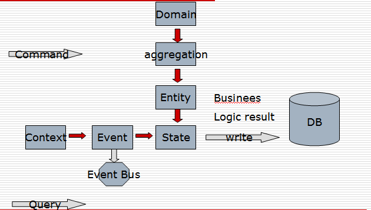

CES:Context Event and StateHow to translate business logic into a ubiouitous language? what kind of ubiouitous language can combine OO and FP(Funtcion programming)? the answer is here:  The route from Domain to aggregation Entity belongs to DDD(Domain-driven design), it is a structural perspective view, this is strengths of OO, the entity hold the business logic running state that will be written into database. later we can query and analysis these data results in CQRS system. Another route is from Context to Event and State, this perspective view is from FP(function programming), in a context, there will be happen a event that will modify the state of a entity. it is like DCI(Data Context and Interaction). Event:DBC In this ubiouitous language, we inroduce Event pattern that service for business logic, it is not architecture events such as a Window Event or click event. Event is a contact of Design By Contact(DBC) that include Preconditions Postconditions and Invariants. in a context that happened a event, we can divide into :before event(Precondition) after event(Postconditions) and event happened result(state: invariants). the state is a value object of aggregation root entity, see Immutability is everything . Example:As a customer, I want to withdraw cash from an ATM, so that I don’t have to wait in line at the bank.
Context Context is about all business entity interactions, in a context, a entity of aggregation root act as a role triggers all domain event with other aggregations. in a aggregation, a method directly invoke other methods in synchronous mode, but betwwen aggregations a event happens in asynchronous or concurrent mode. in here the Conext maybe equivalent to bouned context in DDD, or equivalent to context of DCI, so, we can combine DDD(OO) and DCI(FP) into a system. but we must clearly know what differences between them, Context is a bridge of them. In CQRS and Event Sourcing, user send a command into system, and the command handler will transfer the event to a Service or a Aggregation root. aggregation root will in a context response for the event from front end. this is a paradigm that OO commands FP. summary: CES uses FP paradigm patching up OO paradigm, and makes DDD practice more closer to user story or features list, brings DDD with BDD onto a agile way. CES can be implemented in traditional OO language such as Java or C#, that will be better in FP langugae. Service/Message model has gone, next big thing is Context/Event model.JdonFramework DDD + CQRS + EventSourcing examples DDD CQRS EventSourcing example source: football Match related articles: Eric evans: Acknowledging CAP at the Root -- in the Domain Model Changing the mindset - more object-oriented view at the business domain modeling Decomposing applications for deployability and scalabilit DDD DCI and Domain Events example how to enhance Jdon framework to DCI framework ? how to easily develop a non-blocking concurrent application ?
|
|